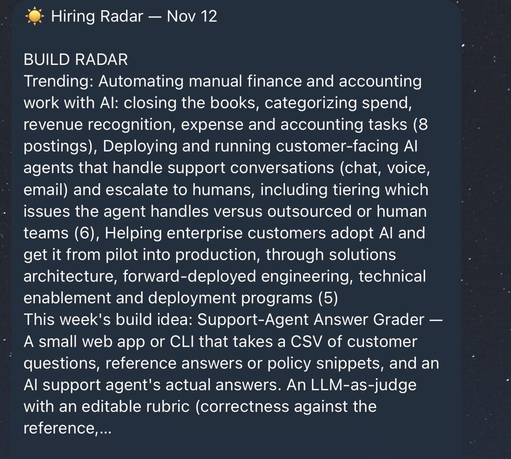

An agent I built reads ~4,500 open roles at 20 AI companies, four mornings a week.
It surfaces the problems those companies keep hiring people to solve.
I pick one I can build in about 6 hours, ship it, and post what worked and what broke.
Builds
ShippedWeek 2 bonus · Nov 2026
Account Research Agent
Type in a company. It reads recent news, the company's own site, and its public job board, then tells a sales rep what changed there and drafts two or three first lines they could actually send.
Every claim cites a numbered source and quotes it word for word. Code checks the quote and every figure in the sentence. Anything that doesn't match is dropped, and the brief says why.
If nothing verifies, it says "No verified brief" instead of guessing. A made-up fact in a cold email is worse than no email.
Hiring counts by team are computed in code. One Claude call per company, so a brief costs pennies.
Run it from a button on GitHub. Example briefs for Notion, Linear, and Vercel are in the repo. 25 automated tests, including fabricated quotes and a prompt-injection page.
Built in a day with Claude Code.
Why this one: sales teams are hiring people to build AI tools for their reps, and account research is the first hour of every rep's day.
Stack: Python · Claude API · GitHub Actions · pytest.
Grades an AI customer-support agent's answers for a fictional credit union, then grades the grader. It catches answers that are wrong, made up, non-compliant, or that should have gone to a human.
Claude acts as the judge and has to quote the exact policy line behind each verdict. Code checks that the quote is real; anything unverifiable becomes "needs review" instead of being trusted.
I hand-labeled all 30 cases, then measured the judge against my labels, with 10 cases held out from tuning.
Pass/fail was easy: 18 of 18 bad answers caught, no false alarms. Naming the problem was hard: the first rubric got it exactly right on 8 of 18. One rubric change took it to 17 of 18, and 6 of 6 on the held-out cases.
Hard cap of 40 Claude calls per run, with results cached, so re-running is nearly free. 20 automated tests.
Why this one: deploying and evaluating customer-facing AI agents was a top trend in AI hiring this week.
Stack: Python · Claude API · GitHub Actions · GitHub Pages · pytest.
Build Radar — an agent that tells me what to build next
Four mornings a week it pulls every open role from 200+ companies' public job boards, filters to roles that ask for AI, agents, or automation, and sends me a message with the problems companies keep hiring for, plus one build idea.
Started at ~4,500 postings from 20 companies; now reads ~28,000 per run from 200+ companies across Ashby, Greenhouse, and Lever.
Claude groups the recurring problems. Code computes the posting counts, so they never come from the model's say-so.
Claude calls are hard-capped per run and enforced in code, so a run costs pennies.
Runs on GitHub Actions on a schedule and delivers to my phone. 160 automated tests.
Built in one afternoon with Claude Code.

A real Build Radar message. Its suggestion became Week 2's build.
Stack: Python · Claude API · GitHub Actions · Telegram Bot API · pytest. Code is private.
Before the weekly series
Shipped2026
AI Market Intelligence Agent
Built in one week: a daily agent that collected ~500 articles, ranked them with Claude for a specific company, and published an executive brief. It verified every claim against its source in code and published nothing rather than something unsupported.
Measured ranking against hand-labeled data and raised agreement from 75% to 90%, holding on a held-out set.
309 automated tests. Ran daily on GitHub Actions; now paused to save API cost.
Four months of building before and after work: QuickBooks Online integration, source-traced answers, role-based access, and audit logging, verified by more than 1,100 automated tests and mutation testing. The biggest lesson was to validate demand before building.